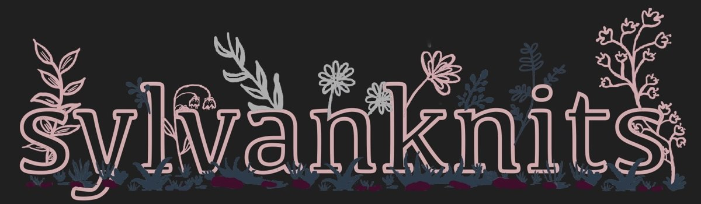

sylvanknits offers technical editing for knitting patterns, sample knitting, and general test knitting support services.
We are currently on hiatus as we explore new projects and are not accepting new clients. Please check back again in 2027!